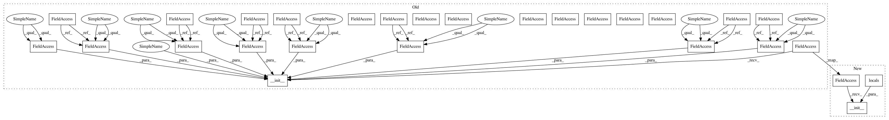

6c91f3853b4426f3f2ac6d98a3aa89a800b8bec3,softlearning/environments/gym/mujoco/ant_env.py,AntEnv,__init__,#AntEnv#Any#Any#Any#Any#Any#Any#Any#Any#,12
Before Change
contact_force_range=(-1.0, 1.0),
reset_noise_scale=0.1,
exclude_current_positions_from_observation=True):
self._ctrl_cost_weight = ctrl_cost_weight
self._contact_cost_weight = contact_cost_weight
self._healthy_reward = healthy_reward
self._terminate_when_unhealthy = terminate_when_unhealthy
self._healthy_z_range = healthy_z_range
self._contact_force_range = contact_force_range
self._reset_noise_scale = reset_noise_scale
self._exclude_current_positions_from_observation = (
exclude_current_positions_from_observation)
mujoco_env.MujocoEnv.__init__(self, "ant.xml", 5)
utils.EzPickle.__init__(
self,
ctrl_cost_weight=self._ctrl_cost_weight,
contact_cost_weight=self._contact_cost_weight,
healthy_reward=self._healthy_reward,
terminate_when_unhealthy=self._terminate_when_unhealthy,
healthy_z_range=self._healthy_z_range,
contact_force_range=self._contact_force_range,
reset_noise_scale=self._reset_noise_scale,
exclude_current_positions_from_observation=(
self._exclude_current_positions_from_observation))
@property
def healthy_reward(self):
return float(
After Change
contact_force_range=(-1.0, 1.0),
reset_noise_scale=0.1,
exclude_current_positions_from_observation=True):
utils.EzPickle.__init__(**locals())
self._ctrl_cost_weight = ctrl_cost_weight
self._contact_cost_weight = contact_cost_weight
In pattern: SUPERPATTERN
Frequency: 4
Non-data size: 28
Instances
Project Name: rail-berkeley/softlearning
Commit Name: 6c91f3853b4426f3f2ac6d98a3aa89a800b8bec3
Time: 2019-02-01
Author: hartikainen@berkeley.edu
File Name: softlearning/environments/gym/mujoco/ant_env.py
Class Name: AntEnv
Method Name: __init__
Project Name: rail-berkeley/softlearning
Commit Name: 6c91f3853b4426f3f2ac6d98a3aa89a800b8bec3
Time: 2019-02-01
Author: hartikainen@berkeley.edu
File Name: softlearning/environments/gym/mujoco/walker2d_env.py
Class Name: Walker2dEnv
Method Name: __init__
Project Name: rail-berkeley/softlearning
Commit Name: 6c91f3853b4426f3f2ac6d98a3aa89a800b8bec3
Time: 2019-02-01
Author: hartikainen@berkeley.edu
File Name: softlearning/environments/gym/mujoco/ant_env.py
Class Name: AntEnv
Method Name: __init__
Project Name: rail-berkeley/softlearning
Commit Name: 6c91f3853b4426f3f2ac6d98a3aa89a800b8bec3
Time: 2019-02-01
Author: hartikainen@berkeley.edu
File Name: softlearning/environments/gym/mujoco/humanoid_env.py
Class Name: HumanoidEnv
Method Name: __init__
Project Name: rail-berkeley/softlearning
Commit Name: 6c91f3853b4426f3f2ac6d98a3aa89a800b8bec3
Time: 2019-02-01
Author: hartikainen@berkeley.edu
File Name: softlearning/environments/gym/mujoco/hopper_env.py
Class Name: HopperEnv
Method Name: __init__